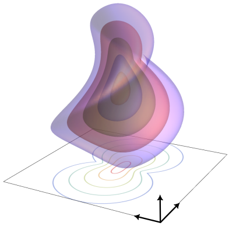

Eikonal PDE
 In "Crossing-Preserving Geodesic Tracking on Spherical Images" (🔓arXiv, 🧑💻code), we model blood vessels as geodesics of Riemannian distances on position-orientation spaces. It turns out that these distances are the (viscosity) solutions of corresponding eikonal PDEs. Here I go over how we can solve the eikonal PDE practically to recover the distance map. I also wrote some shaders (Shadertoy) so we can see it in practice. A preliminary WebGPU implementation is available at the bottom of the page.
By definition, a Riemannian manifold \((\mathcal{M}, \mathcal{G})\) has a Riemannian metric tensor field \(\mathcal{G}\) (or Riemannian metric for short), which in essence is an inner product defined on the tangent space at each point. The Riemannian metric locally defines lengths and angles. It can also be used to define distances on the manifold via \[ d(p, q) := \inf_{\gamma \in \Gamma_p^q} L(\gamma) := \inf_{\gamma \in \Gamma_p^q} \int_0^1 \sqrt{\mathcal{G}_{\gamma(t)}(\dot{\gamma}(t), \dot{\gamma}(t))} d t, \] where \(\Gamma_p^q := \{\gamma: \mathbb{R} \to \mathcal{M} \,|\, \gamma(0) = p, \gamma(1) = q, \gamma \textrm{ sufficiently regular}\}\), and \(L\) is the length functional. The geodesics are then the curves that minimise \(L\). The figure shows the isosurfaces of a distance map on position-orientation space. We designed the Riemannian metric such that the distance between points is small when they are both spatially close and aligned.
Riemannian metrics also allow us to properly define the notion of gradient on manifolds: the gradient is the Riesz representative of the differential. This means that \[ \mathcal{G}(\nabla f, X) := X f \] for \(f \in C^\infty(\mathcal{M})\) and \(X \in \Gamma(T\mathcal{M})\). Now the eikonal PDE is given by \[ \begin{cases} \vert \nabla W \vert = 1, \textrm{ on } \mathcal{M} \setminus \{p_0\}, \\ W(p_0) = 0, \end{cases} \] and the distance map \(W := d(p_0, \cdot)\) is the solution to the eikonal PDE. Hence, solving the eikonal PDE gives us the distance map.
However, the eikonal PDE is hard to solve directly, since it is a boundary value problem. We therefore instead solve an iterative relaxation: \[ \begin{cases} \frac{\partial}{\partial r} W_{n + 1}^\epsilon(p, r) = 1 - \vert \nabla_p W \vert, \textrm{ on } \mathcal{M} \times [0, \epsilon], \\ W_{n + 1}^\epsilon(p_0, 0) = W_n^\epsilon(p_0, \epsilon),\textrm{ on } \mathcal{M} \setminus \{p_0\}, \\ W_{n + 1}^\epsilon(p_0, r) = 0. \end{cases} \] The parameter \(\epsilon\) controls the accuracy, while \(n\) is the iteration variable, and we have the following convergence result: \[ W(p) = \lim_{\epsilon \downarrow 0} \lim_{n \to \infty} W_{n + 1}(p, 0). \] Notably, it takes more iterations to converge as \(\epsilon\) is decreased.
I have created a shader on Shadertoy that computes a distance map on \(\mathbb{R}^2\) in this way. The Riemannian metric is simply the Euclidean metric, scaled pointwise by a cost function, similar to how we defined the metrics in our paper.
Here is an initial WebGPU implementation of the distance map computation: